Machine Learning Workflow
X ve Y Kavramı¶
- X (Bağımsız Değişkenler / Features): Modelin girdi olarak kullandığı özelliklerdir.
-
Y (Bağımlı Değişken / Target): Modelin tahmin etmeye çalıştığı çıktıdır.
-
Örnek Ev Fiyat Tahmini: X (metrekare, oda sayısı, konum, bina yaşı) -> Y (ev fiyatı)
Not
Modelin başarısı, yalnızca algoritmaya değil; X ve Y’nin doğru tanımlanmasına doğrudan bağlıdır.
Cross‑Validation¶
- Cross‑Validation, makine öğrenimi modellerinin genelleme yeteneğini (overfitting’i önleyerek gerçek dünyada nasıl performans göstereceğini) değerlendirmek için yaygın olarak kullanılan bir tekniktir. Temel adımlar şöyle işler:
- Veri Kümesini Parçalara Bölme
- En yaygın yöntem k‑fold cross‑validation’dır: Veri seti eşit büyüklükte k parçaya (fold) bölünür.
- Örneğin
k = 5ise, veri beş parçaya ayrılır.
- Eğitim ve Test Döngüleri
- Her seferinde bu k parçadan biri test seti, kalan
k – 1parça eğitim seti olarak kullanılır. - Toplam k farklı model eğitilir ve test edilir.
- Her seferinde bu k parçadan biri test seti, kalan
- Performans Ölçümü
- Her döngü için hata veya skor metriği (örn. doğruluk, MSE, R²) hesaplanır.
- Tüm k sonuç ortalanarak nihai performans tahmini elde edilir.
- Avantajları
- Veri setindeki rastgele bölünmelere bağlı sapmayı azaltır.
- Modelin farklı alt kümelerde nasıl davrandığına dair kapsamlı bilgi sunar.
- Özellikle küçük veri setlerinde daha güvenilir bir değerlendirme sağlar.
- Veri Kümesini Parçalara Bölme
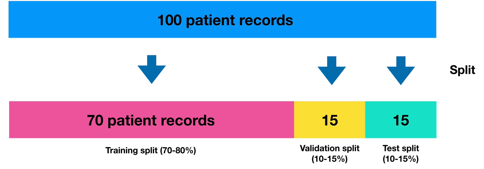
| Yöntem | Açıklama |
|---|---|
| k‑Fold | Veri k parçaya bölünür ve k kez eğitim/test yapılır. |
| Stratified k‑Fold | Özellikle sınıflandırmada, her fold’da sınıf oranlarını korur. |
| Leave-One-Out | k = N (her örnek bir fold); her model tek bir örnek test eder. |
| Shuffle Split | Rastgele bölme ve tekrarlama; her döngüde farklı rastgele bölme. |
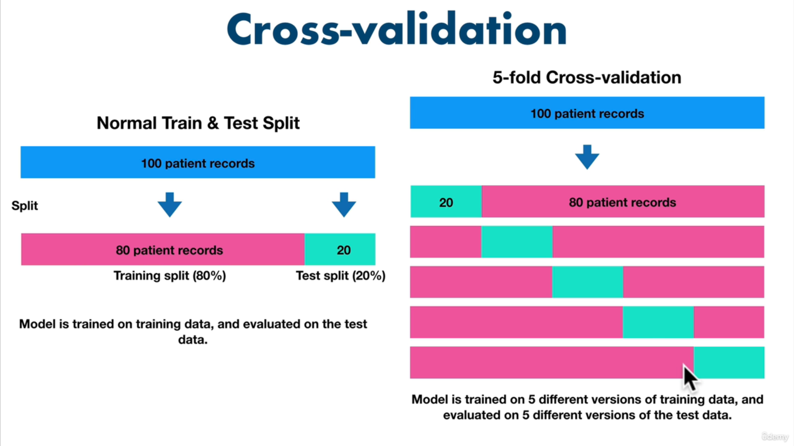
- Genelleme Hatalarını Ölçer: Tek seferlik eğitim/test bölünmesine kıyasla daha istikrarlı metrikler sağlar.
- Model Seçimi: Farklı hiperparametrelerin karşılaştırılmasında güvenilir sonuç verir.
- Küçük Veri Setleri: Sınırlı veri olduğunda, her örnek hem eğitim hem test için kullanılarak veri verimli değerlendirilir.
Not
Bu yöntemle, modelinizin Coefficient of Determination (R²), doğruluk veya diğer metriklere dayalı performans tahmininiz daha güvenilir ve tekrarlanabilir hale gelir.
Veri Hazırlama¶
Model performansını en çok etkileyen aşama, veri hazırlamadır. Tipik akış aşağıdaki gibidir:
graph LR
A[Clean Data] --> B[Transform Data];
B --> C[Reduce Data];-
Clean Data (Veri Temizleme):
- Eksik değerlerin giderilmesi veya silinmesi
- Tutarsız birimlerin normalize edilmesi (ör. m², kg)
- Hatalı veya anlamsız kayıtların ayıklanması
- Kategorik etiketlerin düzenlenmesi
-
Transform Data (Veri Dönüştürme):
- Log / ölçek dönüşümleri
- Tarih alanlarının parçalanması
- Kategorik verilerin sayısal temsile çevrilmesi
- Özellik dağılımlarının dengelenmesi
-
Reduce Data (Veri Azaltma):
- Sabit veya anlamsız kolonların kaldırılması (ID, hash vb.)
- Yüksek korelasyonlu özelliklerin azaltılması
- Boyut indirgeme yaklaşımları
Yaygın Ölçeklendirme Yöntemleri¶
Normalization (Min–Max)¶
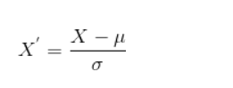
- Özellikleri 0–1 aralığına sıkıştırır
- Karşılaştırmayı kolaylaştırır
- Aykırı değerlere duyarlıdır
Standardization (Z-Score)¶
- Ortalama = 0, standart sapma = 1
- Aykırı değerlere daha dayanıklıdır
- Dağılım varsayımı içerir
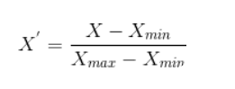
Kategorik Veriler ve One-Hot Encoding¶
Kategorik değişkenler doğrudan sayısal işlemlere uygun değildir. Bu nedenle binary temsile dönüştürülür.
- Her kategori ayrı bir sütun
-
Varlık: 1, yokluk: 0
-
Avantaj: Mesafeye dayalı algoritmalar için doğru temsil
- Dezavantaj:Çok kategori → boyut patlaması
| Renk | Kırmızı | Mavi | Yeşil |
|---|---|---|---|
| Kırmızı | 1 | 0 | 0 |
| Mavi | 0 | 1 | 0 |
| Yeşil | 0 | 0 | 1 |
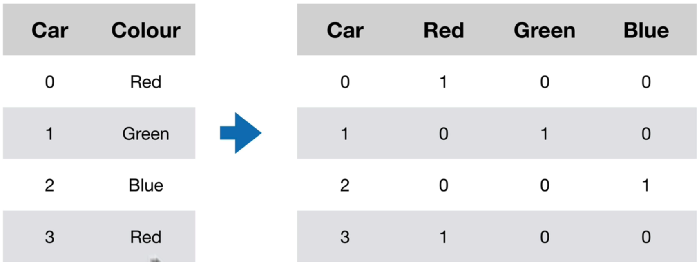
Algoritmalar¶
Feature Scaling¶
- Farklı aralıklardaki özellikler, gradyan iniş gibi optimizasyon tabanlı algoritmalarda öğrenme hızını ve kararlılığı bozar. İki yaygın yöntem:
Gradyan İniş Tabanlı Algoritmalar¶
- Linear regression, logistic regression, sinir ağları, PCA vb. modeller gradyan iniş ile parametrelerini günceller. Özellik aralıkları farklı olduğunda:
- Büyük değerli özellikler çok küçük adımlarla güncellenir,
- Küçük değerli özellikler çok büyük adımlarla güncellenir,
- Sonuçta öğrenme yavaşlar veya dengesizleşir.
- Bu yüzden tüm özellikleri aynı ölçeğe getirmek, gradyan inişin minimuma hızlı ve dengeli yakınsamasını sağlar.
Distance‑Based¶
- Özellikler arası mesafeye duyarlıdır
- Ölçeklendirme zorunludur
-
Örnek kullanım alanı: Benzerlik, kümelenme, yakın komşuluk
-
Örnek Algoritmalar:
- K‑NN (K‑Nearest Neighbors): Sınıflandırma ve regresyon için en yakın K komşuyu kullanır.
- K‑means: Veri kümesini K kümeye ayırır, merkezine en yakın noktaları bulur.
- SVM (Support Vector Machines): Sınıflandırma için hiperdüzlemler oluşturur; mesafe ölçüsüne duyarlıdır.
- Neden Ölçeklendirme?
- İki özellik farklı aralıklardaysa (örneğin not ortalaması 0–5, gelir 0–100 000), gelir özelliği mesafeyi domine eder.
- Öklidyen mesafe gibi metrikler, tüm özellikleri eşit katkıda bulunacak şekilde normalizasyon gerektirir.
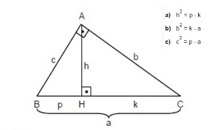
Tree‑Based Algoritmalar¶
- Ağaç tabanlı modeller, hem sınıflandırma hem de regresyon problemlerinde en popüler yöntemlerden biridir. Doğrusal olmayan ilişkileri kolayca yakalar ve özellik ölçeğine duyarsızdır.
- Karakteristik Özellikler:
- Split (Bölme) Kriteri: Her düğümde, veri setini en homojen alt kümelere ayıran tek bir özelliğe göre bölme.
- Özellik Ölçeğine Duyarsızlık: Tek bir özelliğe dayalı böldüğü için, diğer özelliklerin değer aralıkları bölme kararını etkilemez.
- Kararlılık & Yorumlanabilirlik: Model yapısı ağaç grafiği şeklinde görselleştirilebilir.
- Örnek Algoritmalar:
- Decision Tree: Tek bir ağaç yapısı kullanır.
- Random Forest: Birden çok karar ağacından oluşan topluluk yöntemi.
- Gradient Boosted Trees: Ardışık ağaçlarla hatayı azaltan güçlendirme yöntemi.
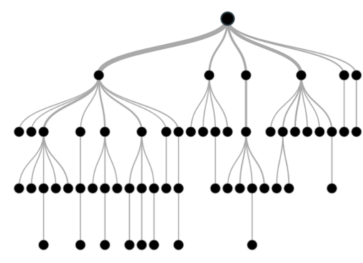
Not
Mesafeye dayalı algoritmalarda mutlaka ölçeklendirme yapın. Ağaç tabanlı algoritmalar ise ölçekleme gerektirmez; farklı aralıklardaki özellikleri doğrudan kullanabilir.
Yaygın Yöntemler¶
| Yöntem | Açıklama |
|---|---|
| k-Fold | Veri k parçaya bölünür, her parça test edilir |
| Stratified k-Fold | Sınıf oranları korunur |
| Leave-One-Out | Her örnek tek başına test edilir |
| Shuffle Split | Rastgele ve tekrarlı bölme |
Özellikle küçük veri setlerinde cross-validation kritik öneme sahiptir.
One‑Hot Encoding¶
- Kategorik değişkenleri (örneğin renkler) binary sütunlara dönüştürür. Her kategori için bir sütun oluşturulur; o kategori var ise 1, yok ise 0 ile gösterilir:
| Renk | Kırmızı | Mavi | Yeşil |
|---|---|---|---|
| Kırmızı | 1 | 0 | 0 |
| Mavi | 0 | 1 | 0 |
| Yeşil | 0 | 0 | 1 |
- Avantaj: Mesafeye dayalı algoritmalarda doğru mesafe ölçümü sağlar.
- Dezavantaj: Çok sayıda kategori varsa boyut patlamasına (high dimensionality) yol açabilir.
Decision Tree (Karar Ağacı)¶
- Hem sınıflandırma hem de regresyon görevlerinde kullanılan, parametrik olmayan denetimli öğrenme (supervised learning) algoritmasıdır.
- Nasıl Çalışır?
- Veri, her düğümde en iyi ayırımı sağlayan özellik ve eşik değeri (ör. Gini impurity, Entropy) seçilerek ikili dallara ayrılır.
- Yaprak düğümlere kadar veya önceden belirlenmiş koşullara (ör. maksimum derinlik) ulaşana dek bölünme devam eder.
- Avantajlar:
- Yorumlanabilir ve hızlıdır.
- Veri ön işleme (normalizasyon, ölçekleme) genellikle gerekmez.
- Dezavantajlar:
- Derin ağaçlar aşırı öğrenmeye meyillidir.
- Karar sınırlarını dikdörtgenlere benzer bölgelere böler, dolayısıyla karmaşık sınırlar zor öğrenilir
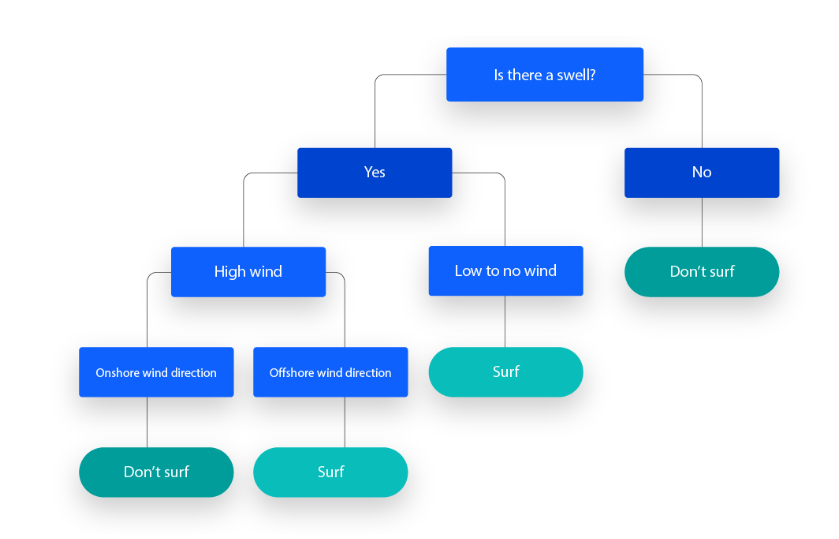
Determination Katsayısı (R²)¶
- Bir regresyon modelinin verideki toplam varyansın ne kadarını açıkladığını gösteren istatistiksel ölçüdür.
- Özellikler:
- Aralık: Teorik olarak
- -∞ ile 1 arasında; pratikte modeller iyi çalıştığında
0 - 1arası. - 1’e yaklaşması, modelin veriye mükemmel uyduğunu; 0’a yakın veya negatif olması ise kötü uyumu işaret eder.
Not
Not: Yüksek R², modelin kesinlikle doğru olduğunu değil, sadece verideki değişimi iyi açıkladığını gösterir. Örneğin aşırı öğrenme (overfitting) durumu da yüksek R² ile maskelenebilir.
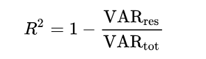
ROC Eğrisi (Receiver Operating Characteristic Curve)¶
-
İkili sınıflandırmada farklı karar eşiklerinin (threshold) performansını, Gerçek Pozitif Oranı (TPR) ve Yanlış Pozitif Oranı (FPR) eksenine karşı çizerek gösteren grafiktir.
-
Kullanım:
- Eşik değeri seçimi: Eğriye en yakın nokta, en iyi dengeyi sağlar.
- İki modelin karşılaştırılması: Eğrisi üstte kalan model daha iyi ayırt edici güce sahiptir.
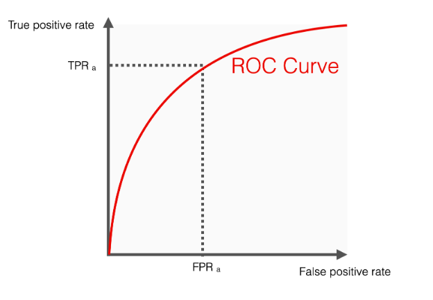
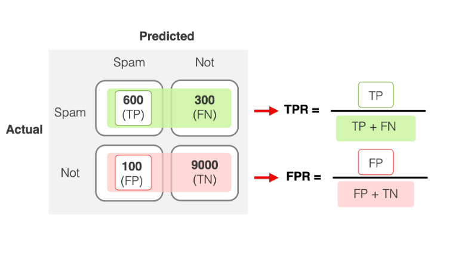
ROC AUC Skoru¶
- ROC eğrisinin altındaki alanın (
Area Under Curve) sayısal değeridir. - Özellikler:
- Aralık: 0.0–1.0
- 0.5: Rastgele tahmin (şans)
- 1.0: Mükemmel ayırt edici güç
- Modelin tüm eşiklerdeki ayırt edici performansını özetler.
- Aralık: 0.0–1.0
- Yorum:
- 0.7–0.8: İyi
- 0.8–0.9: Çok iyi
- 0.9: Mükemmel
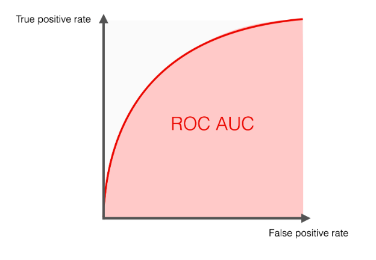
İpuçları ve Ek Bilgiler
- Model Değerlendirme: Sadece tek bir metriğe (ör. R²’ye) bağlı kalmayın; MSE, MAE, Precision, Recall, F1-score gibi ek metrikleri de inceleyin.
- Görselleştirme: Karar ağacını sklearn.tree.export_graphviz veya plot_tree ile görselleştirin, böylece karar kurallarını somut olarak görebilirsiniz.
- Hiperparametre Ayarı: GridSearchCV veya RandomizedSearchCV kullanarak
n_estimators,max_depth,min_samples_splitgibi parametreleri optimize edin. - Genel Bakış: Ensemble yöntemler (Random Forest, Gradient Boosting) tek ağaçlara kıyasla genellikle daha kararlı ve yüksek performanslı sonuçlar verir. Cesaretli olun, hatalı sonuçlardan ders çıkarın ve modelinizi sürekli iyileştirmeye odaklanın!